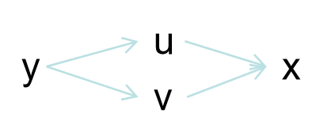
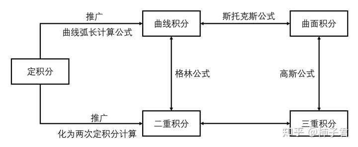
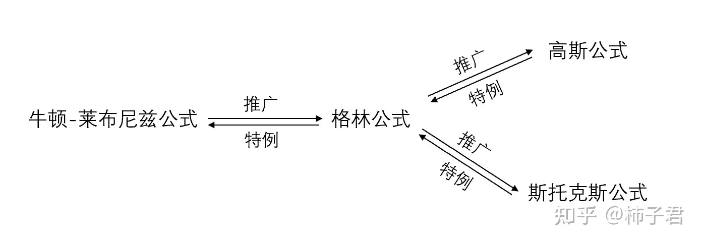

微积分二
最近更新时间：2023-12-9
多元函数
概念：Z是关于x、y的不止一个未知数的函数。
意义：表示空间中的平面方程：Ax+By+CZ+D=0（A、B、C不全0）
| 术语 |
说明 |
| 领域 |
一个面 |
| 内点 |
平面方程线内点 |
| 边界点 |
平面方程线上点 |
| 定义域 |
x和y的取值区间 |
二元函数极值
极值充分条件，判断过程：
-
求驻点：先求出fx′，fy′，令fx′＝0，fy′＝0求出所有驻点，(可能需要互套)
-
求每个驻点的B2−AC值
| 字母 |
含义 |
| A |
fxx′(x0,y0) |
| B |
fxy′(x0,y0) |
| C |
fyy′(x0,y0) |
-
情况分析：
| 情况 |
则为 |
| B2−AC<0 |
A>0极小值，A<0极大值 |
| B2−AC>0 |
该驻点非极值点 |
| B2−AC=0 |
无法判断 |
极值判断捷径：直接配方
| 二元函数最大值出现位置 |
| 极值（实际问题多为此） |
| 偏导不存在 |
| 定义域边界 |
拉格朗日常数法
概念：将有条件极值转为无条件极值，通过增加变量为条件函数的系数，直接尾部挂入此条件来构造新函数。
求Z＝f(x,y)在条件g(x,y)＝0的极值，则：
L(x,y,λ)＝f(x,y)＋λg(x,y)
求Z＝f(x,y)在条件g(x,y)＝0和h(x,y)＝0的极值，则：
L(x,y,λ1,λ2)＝f(x,y)＋λ1g(x,y)＋λ2h(x,y)
结果就是求构造函数L的极值，即求所有未知数x,y,λ1,λ2...的偏导都为0的点。
二元连续
概念：以任何方式向(x0,y0)逼进的极限都一样。
意义：不能有洞，可揉纸变形
偏导数
概念：函数Z＝f(x,y)中，x0，y0领域有定义，在x0处变化Δx，在y0处变化Δy
x的偏导为：ΔxZ＝f(x0＋Δx，y0)−f(x0,y0)，limΔx→0ΔxΔxZ
y的偏导为：ΔyZ＝f(x0，y0＋Δy)−f(x0,y0)，limΔy→0ΔyΔyZ
即同时只有一个变量变化的导数。(偏导存在不一定连续，只4方极限一样)
意义：切面曲线是光滑的
公式：对x求偏导，直接套用导数基本公式，把其他非x的变量都看成是常数。
| 四种表示法 |
fx′(x0,y0) |
Zx′∣x=x0,y=y0 |
∂x∂f(x0,y0) |
∂x∂Z∣x=x0,y=y0 |
高阶偏导
| 高阶偏导表示 |
fxx′′(x0,y0) |
Zxx′′∣x=x0,y=y0 |
∂x2∂2f(x0,y0) |
∂x2∂2Z∣x=x0,y=y0 |
- 混合高阶偏导：Zxy，Zyx，当连续时：Zxy′′=Zyx′′
隐函数偏导
在Ax+By+CZ+D=0的隐函数中：
-
两边同时对x求偏导。
-
含Z项看作是x的复合函数，其他非x的变量都看作是常数。
-
最后写出Zx′表达式。
多元复合偏导
例：有y=f(u,v)，u=g(x)，v=t(x)，具体示意图如下：

一阶导
∂x∂y=∂u∂y×∂x∂u+∂v∂y×∂x∂v
二阶导
∂x2∂2y==(∂u∂y×∂x∂u+∂v∂y×∂x∂v)′(∂u2∂2y×∂x∂u×∂x∂u)+(∂u∂y×∂x2∂2u)+(∂v2∂2y×∂x∂v×∂x∂v)+(∂v∂y×∂x2∂2v)
全微分
概念：函数Z＝f(x,y)中，x0，y0领域有定义，Δx=0，Δx＋x0∈x0领域，Δy=0，Δy＋y0∈y0领域，那么在(x0,y0)处有：
Δx→0,Δy→0limf(x0+Δx,y0+Δy)=f(x0,y0)+Zx′Δx+Zy′Δy(x0,y0)处的微分表示为(纵轴变换量公式)：dZ∣(x0,y0)=f(x0+Δx,y0+Δy)−f(x0,y0)=Zx′Δx+Zy′Δx
即要加上全部微小变化×对应偏导
意义：做近似计算等对偏导数的使用。
二重积分
概念：函数Z＝f(x,y)中，
ΔSi→0lim∑f(x,y)ΔSi＝∬Df(x,y)dσ＝∬Df(x,y)dxdy
意义：其中，ΔSi为函数Z在xoy平面上投影D划分的无数个非常小的底面积，f(x,y)为高度，因此底面积×高就是求体积。
| 性质 |
| f(x,y)>0二重积分数值为正，f(x,y)<0二重积分数值为负 |
| 数乘内外提 |
| 先加减后积分，先积分后加减 |
| 若f(x,y)≤g(x,y)，则∬Df(x,y)dσ≤∬Dg(x,y)dσ |
| 介值性，若m≤f(x,y)≤M，则mSD≤∬Df(x,y)dσ≤MSD |
| 二重积分中值定理：一定能在找到一点f(x0,y0)SD＝∬Df(x,y)dσ |
直接坐标系
X型积分：
∬Df(x,y)dxdy＝∫x左范围x右范围dx∫关于x下函数关于x上函数f(x,y)dy
Y型积分：
∬Df(x,y)dxdy＝∫y下范围y上范围dy∫关于y左函数关于y右函数f(x,y)dx
| 性质 |
| 积不相关的变量，可当常量往前提 |
| X型积分和Y型积分的复杂程度不一样，X型积分和Y型积分有时候有一个不能积分 |
| ∬D1dxdy＝SD |
极坐标系\换元法
| 极坐标 |
说明 |
取值范围 |
| r |
从原点出发的射线长度 |
[0,+∞) |
| θ |
射线从x轴向y轴旋转的度数 |
[0,2π] |
例1——原点圆：D为：x2＋y2＝4，求∬Df(x,y)dxdy
-
直接坐标系转极坐标系（换元）：x=rcosθ，y=rsinθ
-
雅可比行列式：
J∂(r,θ)∂(x,y)=∂r∂x∂r∂y∂θ∂x∂θ∂y=cosθsinθ−rsinθrcosθ=rcos2θ+rsin2θ=r
-
D对应为：r2=4，即半径为2的圆
被积f(x,y)对应为：f(rcosθ，rsinθ)J(r,θ)=f(rcosθ，rsinθ)r
∬Df(x,y)dxdy==∬角度起角度终dθ∬长度起长度终f(rcosθ，rsinθ)rdr∬02πdθ∬02f(rcosθ，rsinθ)rdr
例2——非原点圆：D为：(x−1)2＋(y−2)2＝4，求∬Df(x,y)dxdy
-
换元：u=x−1，v=y−2
-
雅可比行列式：x=u+1，y=v+2
J∂(u,v)∂(x,y)=∂u∂x∂u∂y∂v∂x∂v∂y=1001=1
-
D对应为：u2+v2=4
被积f(x,y)对应为：f(u+1,v+2)×1
-
二次换元转极坐标：略
例3——原点椭圆：D为：a2x2＋b2y2＝1，求∬Df(x,y)dxdy
-
直接坐标系转极坐标系（换元）：x=arcosθ，y=brsinθ
-
雅可比行列式：
J∂(r,θ)∂(x,y)=∂r∂x∂r∂y∂θ∂x∂θ∂y=acosθbsinθ−arsinθbrcosθ=abr
-
D对应为：r2=1，即半径为1的圆
被积f(x,y)对应为：f(arcosθ,brsinθ)×abr
旋转体的体积和表面积
| 概念 |
公式 |
解释 |
| 体积 |
2π∬被旋转区域D区域每点到旋转轴的距离rdxdy |
区域积旋转周长得体积 |
| 表面积 |
2π∬被旋转线段L区域每点到旋转轴的距离rds |
线段积旋转周长得表面积 |
-
上述公式的前提：被旋转的对象不可穿过旋转轴
-
ds=1+y′2dx=xt′2+yt′2dt，即曲线长公式
由勾股定理得线段微分②代入①得化简得③④代入①得化简得ds2=dx2+dy2①y′=dxdy,dy=y′dx②ds2=dx2+(y′dx)2ds=1+y′2dxxt′=dtdx,dx=xt′dt③yt′=dtdy,dy=yt′dt④ds2=(xt′dt)2+(yt′dt)2ds=xt′2+yt′2dt
三重积分
概念：函数Z=f(x,y)中，其对应的密度函数Q=g(x,y,z)
ΔVi→0lim∑g(x,y,z)ΔVi＝∭Ωg(x,y,z)dV＝∭Ωg(x,y)dxdydz
意义：其中，ΔVi为函数Z对应空间Ω划分的无数个非常小的体积，g(x,y,z)为对应密度，因此体积×密度就是求质量。
直接坐标系
先一后二投影法：如XOY投影型可得到投影面Dxy，由投影面Dxy逆方向发射激光，以其通过两点所在的面为dz的下限和上限，然后dxdy再依据投影面Dxy和二重积分确定上下限。
XOY投影型+二重积分X型：
==∭Ωg(x,y,z)dxdydz∬Dxydxdy∫z=含x,y的下限z=含x,y的上限g(x,y,z)dz∫x下限x上限dx∫y=含x的下限y=含x的上限dy∫z=含x,y的下限z=含x,y的上限g(x,y,z)dz
XOY投影型+二重积分Y型：
==∭Ωg(x,y,z)dxdydz∬Dxydxdy∫z=含x,y的下限z=含x,y的上限g(x,y,z)dz∫y下限y上限dy∫x=含y的下限x=含y的上限dx∫z=含x,y的下限z=含x,y的上限g(x,y,z)dz
YOZ投影型、XOZ投影型：同理，少用略
| 性质 |
| 积不相关的变量，可当常量往前提 |
| 该激光必须只能经过2个点，该投影型才能积。 |
| ∭Ω1dxdydz＝VΩ |
先二后一切割法：如Z切割型直接确定Z的积分上下限范围，上下限都是常数，而后半部分先积分的二重积分是对应为一个个不同切割面。
Z切割型：
===∭Ωg(x,y,z)dxdydz∫z下限z上限dz∬Dg(x,y,z)dxdy若g(x,y,z)=g2(z)，且每个面的面积公式相同，则提前，直接求解∫z下限z上限g2(z)dz∬D1dxdy∫z下限z上限g2(z)SDdz若g(x,y,z)=g2(z)，则把z看作是常数，老老实实进行dxdy的二重积分
极坐标系\换元法
| 极坐标 |
说明 |
取值范围 |
| r |
从原点出发的射线长度 |
[0,+∞) |
| ϕ |
射线与z轴的夹角 |
[0,π] |
| θ |
射线从x轴向y轴旋转的度数 |
[0,2π] |
- r=4时为球面、θ=4时为半平面，ϕ=4时为圆锥面
例1：柱面坐标，圆截面：Ω为：x2＋y2＝z，z≤4，求∭Ωg(x,y,z)dxdydz
-
换元：x=rcosθ，y=rsinθ，z=z
-
三阶雅可比行列式：
J∂(r,θ,z)∂(x,y,z)=∂r∂x∂r∂y∂r∂z∂θ∂x∂θ∂y∂θ∂z∂z∂x∂z∂y∂z∂z=cosθsinθ0−rsinθrcosθ0001=r
-
Ω对应为：r2=z，z≤4
被积g(x,y,z)对应为：g(r,θ,z)J(r,θ,z)=g(r,θ,z)r
=运用XOY投影型==∭Ωg(x,y,z)dxdydz∭Ωg(x,y,z)rdrdθdz∬Dxydrdθ∫r24g(z,y,z)dz∫02π∫02drdθ∫r24g(z,y,z)dz
例2：柱面坐标，椭圆截面：Ω为：a2x2＋b2y2＝z，z≤4，求∭Ωg(x,y,z)dxdydz
-
换元：x=arcosθ，y=brsinθ，z=0
-
三阶雅可比行列式：
J∂(r,θ,z)∂(x,y,z)=∂r∂x∂r∂y∂r∂z∂θ∂x∂θ∂y∂θ∂z∂z∂x∂z∂y∂z∂z=acosθbsinθ0−arsinθbrcosθ0001=abr
-
Ω对应为：r2=z，z≤4
被积g(x,y,z)对应为：g(r,θ,z)J(r,θ,z)=g(r,θ,z)abr
例3：球面坐标：Ω为：x2＋y2+z2=4，求∭Ωg(x,y,z)dxdydz
-
换元：x=rsinϕcosθ，y=rsinϕsinθ，z=rcosϕ
-
三阶雅可比行列式：
J∂(r,ϕ,θ)∂(x,y,z)=∂r∂x∂r∂y∂r∂z∂ϕ∂x∂ϕ∂y∂ϕ∂z∂θ∂x∂θ∂y∂θ∂z=sinϕcosθsinϕsinθcosϕrcosϕcosθrcosϕsinθ−rsinϕ−rsinϕsinθrsinϕcosθ0=r2sinϕ
-
Ω对应为：r2=4
被积g(x,y,z)对应为：g(r,ϕ,θ)J(r,ϕ,θ)=g(r,ϕ,θ)r2sinϕ
例4：橄榄球面坐标：Ω为：a2x2＋b2y2+c2z2=4，求∭Ωg(x,y,z)dxdydz
-
换元：x=arsinϕcosθ，y=brsinϕsinθ，z=crcosϕ
-
三阶雅可比行列式：
J∂(r,ϕ,θ)∂(x,y,z)=∂r∂x∂r∂y∂r∂z∂ϕ∂x∂ϕ∂y∂ϕ∂z∂θ∂x∂θ∂y∂θ∂z=asinϕcosθbsinϕsinθccosϕarcosϕcosθbrcosϕsinθ−crsinϕ−arsinϕsinθbrsinϕcosθ0=abcr2sinϕ
-
Ω对应为：r2=4
被积g(x,y,z)对应为：g(r,ϕ,θ)J(r,ϕ,θ)=g(r,ϕ,θ)abcr2sinϕ
常见函数图形
| 函数 |
类别 |
图形 |
| x2＋y2＝r2 |
圆 |
圆心(0,0) |
| (x−3)2＋（y−5)2＝r2 |
圆 |
圆心(3,5) |
| a2x2＋b2y2＝1 |
椭圆 |
圆心(0,0)，对称轴x轴、y轴 |
| a2(x−3)2＋b2(y−5)2＝1 |
椭圆 |
圆心(3,5)，对称轴x轴、y轴 |
| x2＋y2−xy＝4 |
椭圆 |
圆心(0,0)，对称轴y=x、y=-x，大小4 |
| x2＋y2＝1，0≤z≤4 |
柱面坐标 |
圆柱 |
| x2＋y2＝z，0≤z≤4 |
柱面坐标 |
圆锥 |
| a2x2＋b2y2＝z，0≤z≤4 |
柱面坐标 |
椭圆锥 |
| x2＋y2+z2=r2 |
球面坐标 |
球 |
| a2x2＋b2y2+c2z2=1 |
球面坐标 |
橄榄球 |
| a2x2−b2y2＝1 |
双曲线 |
) ( |
| y=xk |
双曲线 |
一三象限 |
| y=xk+ax |
双曲线 |
一三象限，对钩函数，渐近线y=ax |
积分关系定理
格林公式：若函数P，Q在闭平面区间D上连续，且有一阶偏导，L为D的边界曲线并取正向，则有曲线积分<=>二重积分
∮LPdx+Qdy=∬D(∂x∂Q−∂y∂P)dxdy若曲线积分与L无关，则∂x∂Q=∂y∂P
高斯公式：若函数P，Q，R在闭空间区间Ω上连续，且有一阶偏导，D为Ω的边界曲面，则有曲面积分<=>三重积分
∬DPdxdy+Qdydz+Rdxdz=∭Ω(∂z∂P+∂x∂Q+∂y∂R)dxdydz
斯托克斯公式：若函数P，Q，R在闭平面区间D上连续，且有一阶偏导，L为D的边界曲线，D的正法方向量与L的正方向按右手法则，则有曲线积分<=>曲面积分
∮LPdx+Qdy+Rdz=∬D(∂x∂Q−∂y∂P)dxdy+(∂y∂R−∂z∂Q)dydz+(∂z∂P−∂x∂R)dzdx
各积分的关系

各积分的转换

总结归纳
主术语
| 多元主术语 |
多元意义 |
对应一元意义 |
对应一元主术语 |
| 二元连续 |
纸可揉，不能破洞 |
一笔画 |
一元连续 |
| 偏导数 |
某方向切线斜率，光滑 |
切线斜率，光滑 |
导数 |
| 全微分 |
利用全部偏导数，做近似计算 |
利用导数，做近似计算 |
微分 |
| 二重积分 |
由面，积高，求体积 |
由线，积高，求面积 |
积分 |
| 三重积分 |
由体积，积密度，求质量 |
\ |
\ |
无穷级数
| 级数 |
概念 |
收敛 |
发散 |
| 等比级数 |
\ |
∣q∣<1时limn→∞1−qa1(1−qn)=1−qa1 |
∣q∣>1 |
| 裂项相消 |
∑n=1∞n(n+1)1 |
limn→∞1−n+11=1 |
\ |
| ln相消 |
∑n=1∞lnnn+1 |
\ |
limn→∞n+1=∞ |
| 调和级数 |
∑n=1∞n1 |
\ |
≥limn→∞∫1+∞x1dx |
| P级数 |
∑n=1∞np1 |
p>1 |
p<1 |
| 交错P级数 |
∑n=1∞(−1)nnp1 |
p≥1，绝对收敛；
p<1，条件收敛 |
\ |
- ln公式：lna−lnb=lnba，lna+lnb=lnab
| 收敛保持运算、性质 |
| 收敛通项数乘，仍然收敛（同广义积分） |
| 收敛通项±收敛通项，仍然收敛 （同广义积分） |
| 收敛级数，任加括号仍然收敛。发散级数，任去括号后仍然发散 |
| 收敛的必要不充分条件是：通项趋于0 |
| 收敛通项＋发散通项，必发散 |
| 发散通项＋发散通项，未必发散 |
| 若|通项|收敛，则原通项收敛（同广义积分） |
| 若原列收敛，则子列收敛，且所有子列收敛一样 |
| （逆否命题）若子列发散，或两个子列收敛不同，则原列发散。 |
正项级数
概念：全部通项≥0
性质：收敛<=>求和函数有界
| 判断方法 |
说明 |
| 比较判别法（夹逼） |
0≤通项≤收敛通项，通项收敛；
通项≥发散通项，通项发散。 |
| 比较判别法（除法） |
limn→+∞收敛通项通项=0，通项收敛；limn→+∞发散通项通项=+∞，通项发散。 |
| 比值判别法 |
limn→∞anan＋1＝L，L>1发散，L<1收敛，L=1无法判 |
| 根值判别法 |
limn→∞nan＝P，P>1发散，P<1收敛，P=1无法判 |
交错级数
概念：通项正负交替出现
| 判断方法 |
说明 |
| 莱布尼茨 |
通项趋于0，且an≥an+1即级数单调不增，则收敛 |
- an与an+1比较的三种方法：相减、相除、求导
| 收敛分类 |
说明 |
| 绝对收敛 |
通项收敛，且|通项|也收敛 |
| 条件收敛 |
通项收敛，但|通项|不收敛 |
幂级数
概念：a0＋a1x＋a2x2＋...＋anxn
判别方法：全部取绝对值，然后用比值判别法
n→∞lim∣unun+1∣=n→∞lim∣anan+1x∣=L因为L<1收敛，有如下情况：①若∣anan+1∣=0，x∈(−∞,+∞)，x收敛半径+∞②若∣anan+1∣=Q∈(0，+∞)，x∈(−Q1,Q1),x收敛半径Q1③若∣anan+1∣=+∞，x=0，x收敛半径0最后，单独判断L=1的情况
| 性质 |
| 两个幂级数通项相加，收敛半径取最小 |
| S(x)在x的收敛域内是连续的 |
| 幂级数通项求导后，收敛域不变，端点需要重新判断 |
| 幂级数通项求积分后，收敛域不变，端点需要重新判断 |
| 幂级数求和：先导后积（可能联系到微分方程，求系数重要点S(0)=0） |
| 幂级数求和：凑等比为x、−x |
傅里叶级数
概念：用级数拟合周期函数，若f(x)是周期函数，周期为T=2l，则通用公式：
f(x)=2a0+n=1∑∞(ancoslnπx+bnsinlnπx)an=l1∫−llf(x)coslnπxdx（n=1,2,3...）bn=l1∫−llf(x)sinlnπxdx（n=1,2,3...）
若f(x)为偶函数，则系数为：
an=l2∫0lf(x)coslnπxdx（n=1,2,3...）bn=0
若f(x)为奇函数，则系数为：
an=0bn=l2∫0lf(x)sinlnπxdx（n=1,2,3...）
傅里叶级数求和，为狄利克雷收敛定理：
-
连续处：S(n)=f(n)
-
间断处：S(n)＝x为n左右f(n)极限均值
微分方程
概念：含有导数或微分的方程
| 分类 |
说明 |
| 常微分方程 |
含一元函数的导数，又分为一阶、高阶 |
| 偏导微分方程 |
含多元函数的偏导数（本科略） |
一阶常微分方程
| 分类 |
说明 |
| 可分离y′的，等式右边不包含y |
直接求不定积分得y |
| 令y′=dxdy |
化为f(x)dx=f(y)dy，两边同时积分 |
| 一阶线性（齐次）y′＋p(x)y＝0 |
y＝Ce−∫p(x)dx |
| 一阶线性（非齐次）y′＋p(x)y＝q(x) |
y＝(∫q(x)e∫p(x)dxdx＋C)e−∫p(x)dx |
- 一阶线性微分方程解的推演：(UV)′=U′V+UV′
高阶常微分方程
| 分类 |
说明 |
| 可分离y(n)的 |
直接多次求不定积分得y |
二阶线性常系数（齐次）
y′′＋py′＋qy＝0 |
构造特征方程，r2＋pr＋q＝0
Δ>0时，解为r1，r2
y＝C1er1x＋C2er2x
Δ=0时，解为r
y＝C1erx＋C2erx |
| 二阶线性常系数（非齐次）y′′＋py′＋qy＝f(x) |
齐次解+特解 |
| 欧拉方程x2y′′＋xpy′＋qy＝f(x) |
换元x=et，t=lnx，则x2y′′=yt′′−yt′，xy′=yt′，得到y关于t的二阶线性常系数（非齐次） |
差分方程
概念：离散函数中，后一个数减去前一个数的构成的方程是一阶差分，一阶减一阶是二阶差分。
| 分类 |
说明 |
| 一阶线性齐次yt＋1＋ayt＝0 |
yt＝y0(−a)t |
| 一阶线性非齐次yt＋1＋ayt＝f(x) |
齐次解+特解 |
平面方程
| 术语 |
二维 |
三维 |
| 平面方程 |
f(x,y)=0 |
f(x,y,z)=0 |
| 切点 |
(x0,y0) |
(x0,y0,z0) |
| 法向量 |
(fx′，fy′)∣(x0,y0) |
(fx′，fy′，fz′)∣(x0,y0,z0) |
| 切方程 |
切线方程fx′(x−x0)＋fy′(y−y0)＝0 |
切平面方程fx′(x−x0)＋fy′(y−y0)＋fz′(z−z0)＝0 |
| 法线 |
fx′x−x0=fy′y−y0 |
fx′x−x0=fy′y−y0=fz′z−z0 |
| \ |
\ |
\ |
| 方向向量 |
l=(i,j) |
l=(i,j,k) |
| 向量长度 |
∣l∣=i2＋j2 |
∣l∣=i2＋j2＋k2 |
| 方向余弦 |
(cosα,cosβ)=(∣l∣i,∣l∣j) |
(cosα,cosβ,cosγ)=(∣l∣i,∣l∣j,∣l∣k) |
| 方向导数 |
(fx′，fy′)⋅(cosα,cosβ) |
(fx′，fy′，fz′)⋅(cosα,cosβ,cosγ) |
| \ |
\ |
\ |
| 封闭区域 |
D是f(x,y)围成的封闭区域 |
Ω是f(x,y,z)围成的封闭区域 |
| 密度函数 |
ρ(x,y) |
ρ(x,y,z) |
| 形心 |
(∬D1dσ∬Dxdσ,∬D1dσ∬Dydσ) |
(∭Ω1dσ∭Ωxdσ,∭Ω1dσ∭Ωydσ,∭Ω1dσ∭Ωzdσ) |
| 质心 |
(∬Dρ(x,y)dσ∬Dxρ(x,y)dσ,∬Dρ(x,y)dσ∬Dyρ(x,y)dσ) |
(∭Ωρ(x,y,z)dσ∭Ωxρ(x,y,z)dσ,∭Ωρ(x,y,z)dσ∭Ωyρ(x,y,z)dσ,∭Ωρ(x,y,z)dσ∭Ωzρ(x,y,z)dσ) |
| 面积 |
∬D1dσ |
\ |
| 体积 |
\ |
∭Ω1dσ |
| 弧长 |
∫于x的投影1+(yx′)2dx |
\ |
| 表面积 |
\ |
∬于xoy的投影面1+(zx′)2+(zy′)2dxdy |
三角公式
积化和差
sinacosb=2sin(a+b)+sin(a−b)
cosasinb=2sin(a+b)−sin(a−b)
cosacosb=2cos(a+b)+cos(a−b)
sinasinb=−2cos(a+b)−cos(a−b)
助记：积化和差，有和有差，相同不筛，不同筛，同头正，异头负，sinsin前负
和差化积（积化和差推导）
sina+sinb=2sin2a+bcos2a−b
sina−sinb=2cos2a+bsin2a−b
cosa+cosb=2cos2a+bcos2a−b
cosa−cosb=−2sin2a+bsin2a−b
降幂公式（积化和差推导）
sin2a=−2cos(2a)−cos(0)=21−cos(2a)
cos2a=2cos(2a)+cos(0)=21+cos(2a)
tan2a=cos2asin2a=1+cos(2a)1−cos(2a)
平方转换
sin2a+cos2a=1
1+tan2a=sec2a
1+cot2a=csc2a
向量旋度、散度公式
向量A(x,y,z)=Pi+Qj+Rk，其中P、Q、R为函数可偏导，则有A的旋度为按第一行代数余子式展开：
rotA=i∂x∂Pj∂y∂Qk∂z∂R=(∂y∂R−∂z∂Q)i−(∂x∂R−∂z∂P)j+(∂x∂Q−∂y∂P)k
向量A的散度为：
divA=∂x∂P+∂y∂Q+∂z∂R